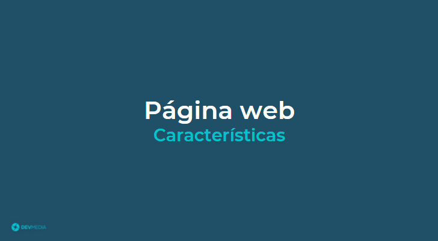
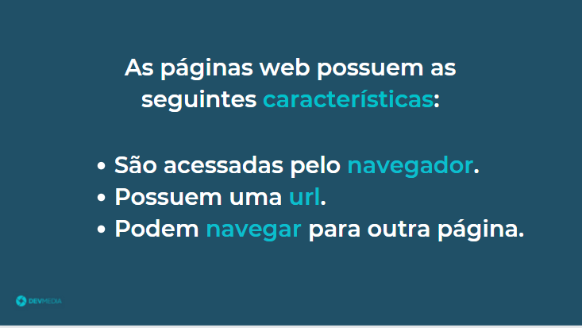
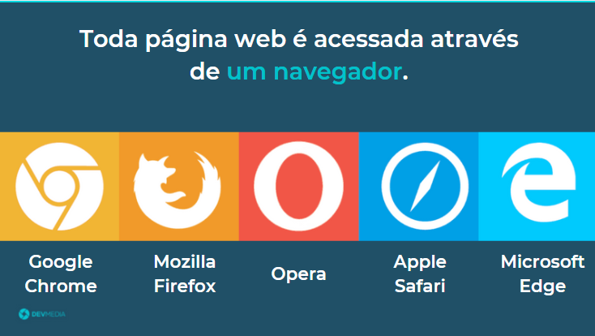
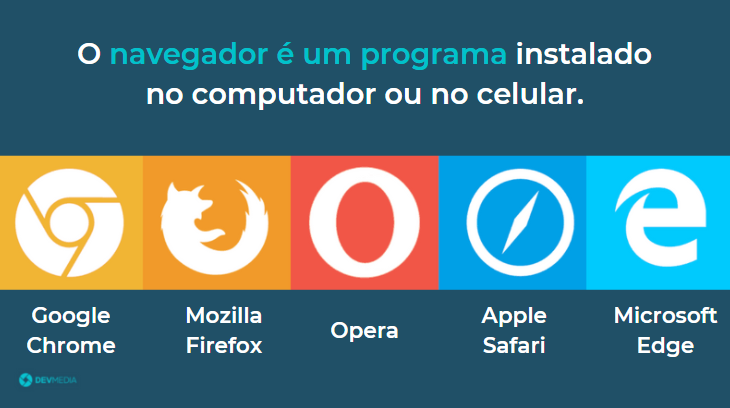
 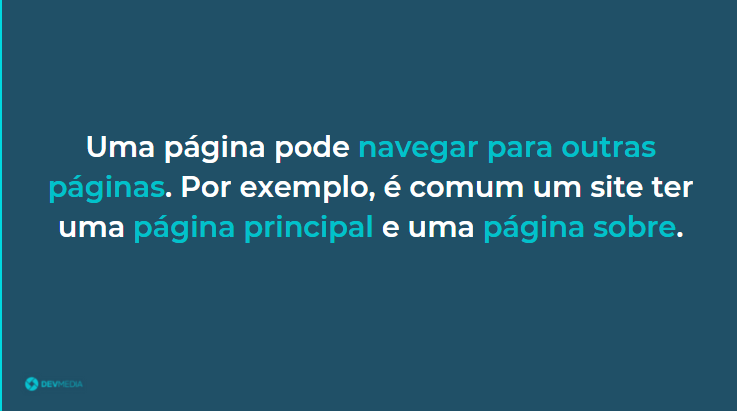
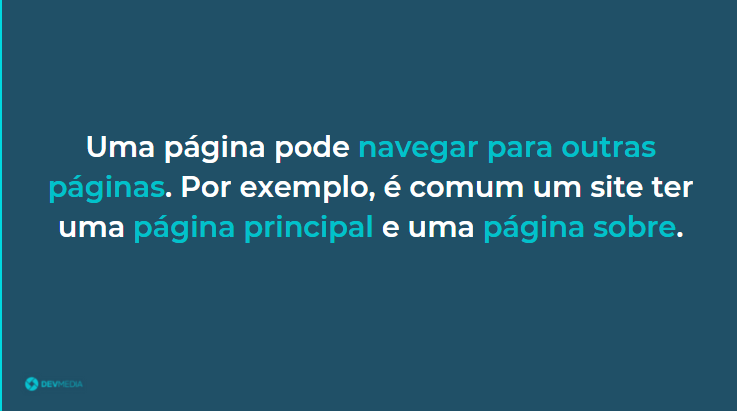
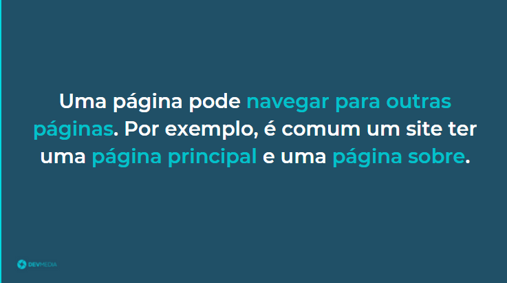
Seja bem-vindo(a) à programação front-end e parabéns pela iniciativa.
O primeiro passo é aprender o que é uma página web. O flow abaixo vai te explicar este conceito:
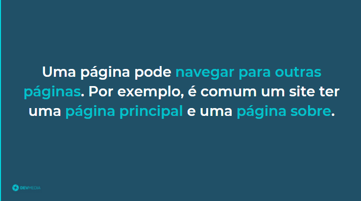
Outra característica de uma página web é ser um front-end, como mostra o flow abaixo:
 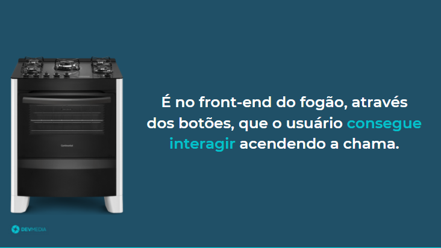
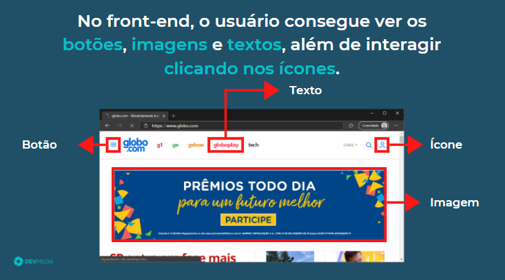
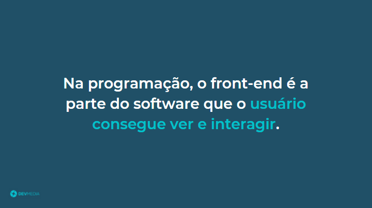
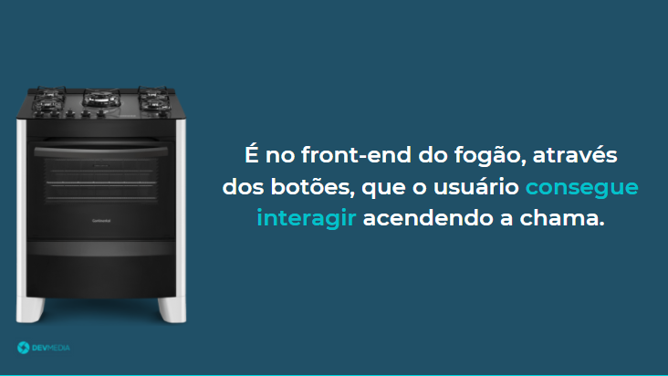
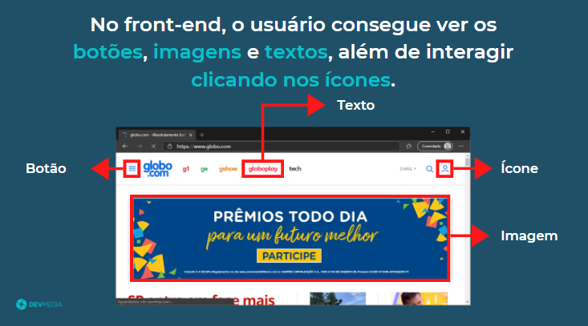
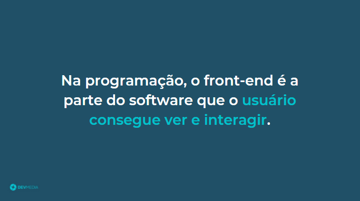
Front-end é a parte visual e interativa de um software
Veja na Figura 2 um exemplo de um front-end.

O front-end web, ou apenas front-end, é um site onde o usuário consegue ver botões, imagens, informações da página e interagir com ela, clicando em um botão, abrindo um link e navegando pelo site